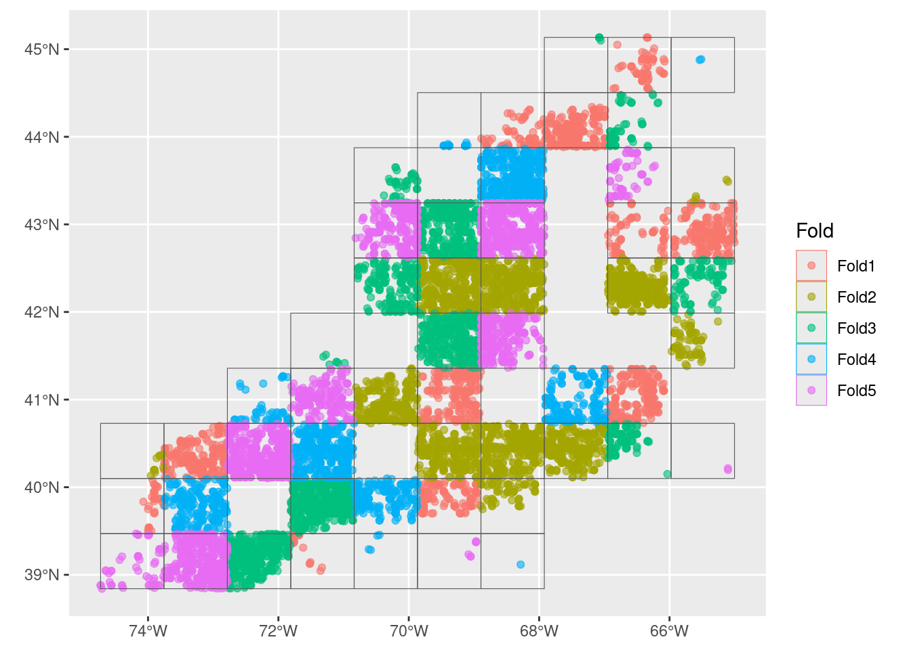
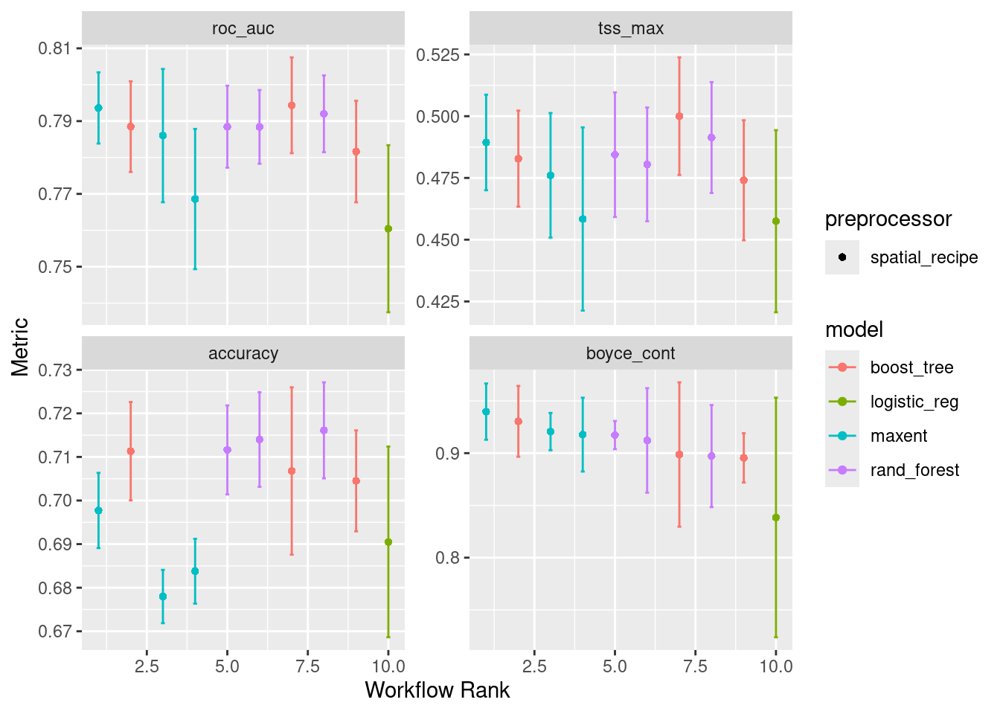
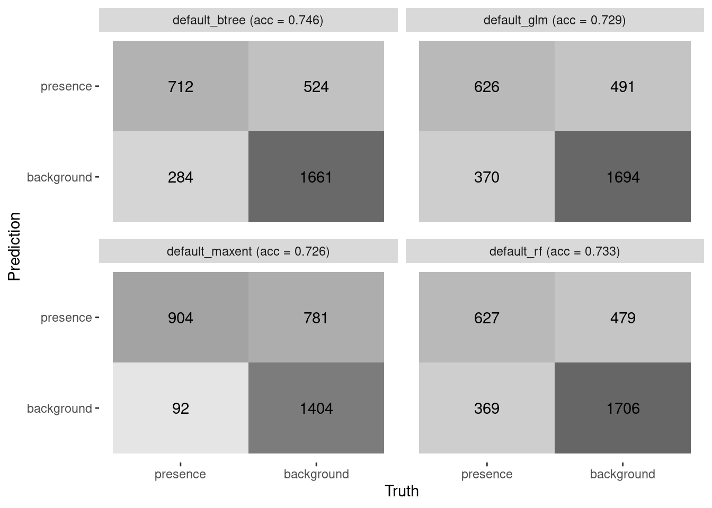
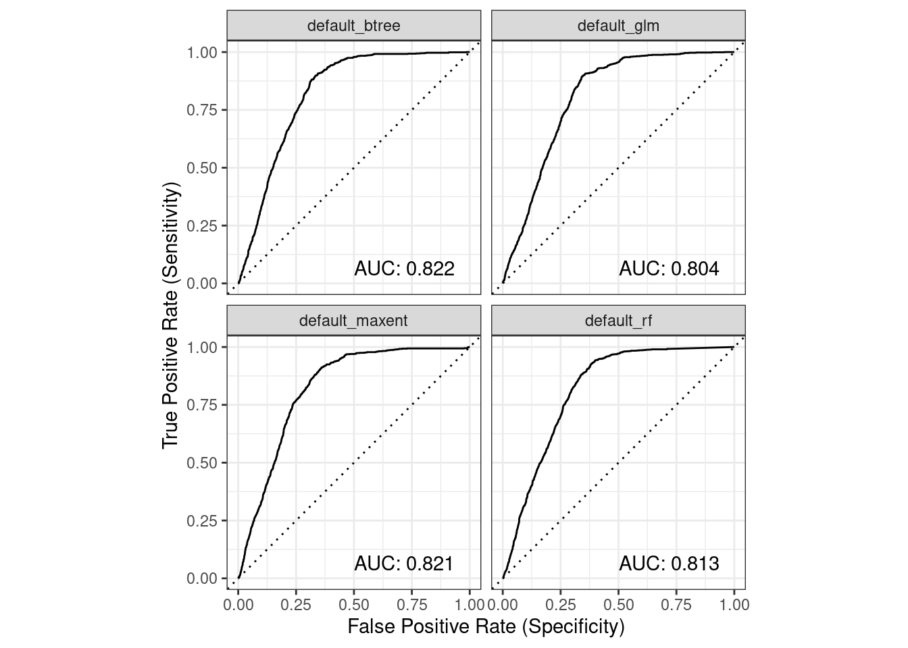
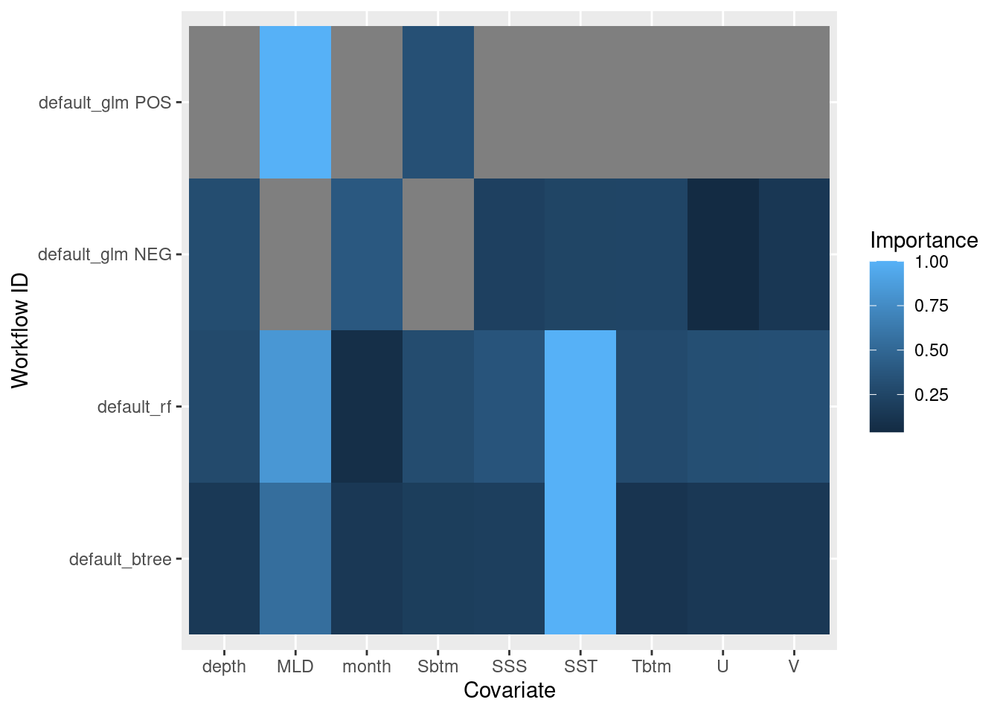
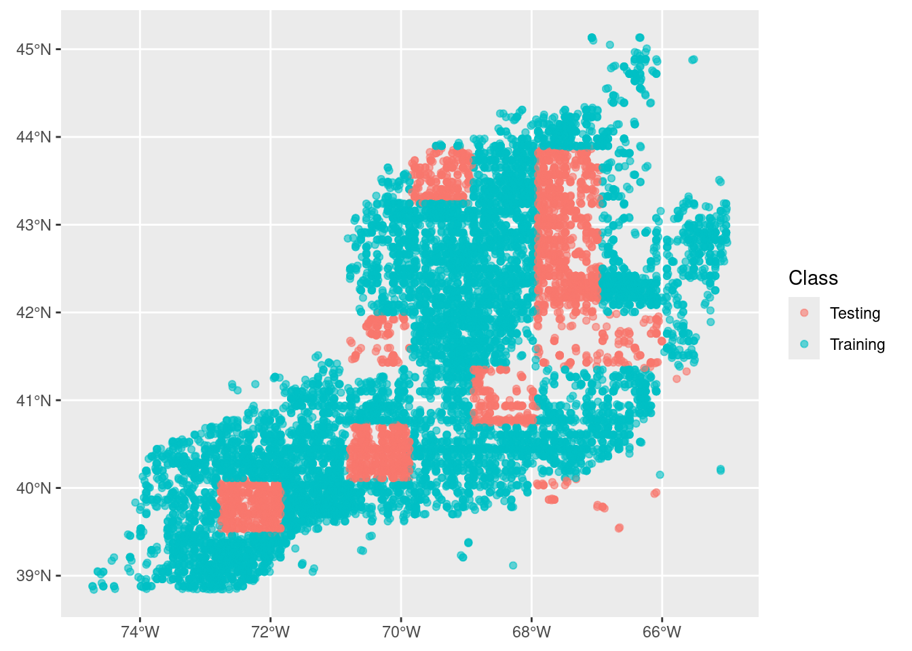
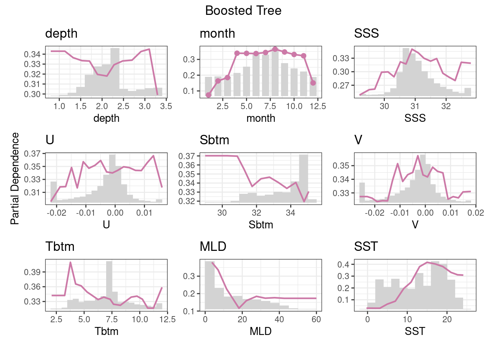

source("setup.R")Models
- All models are wrong, but some are useful.
- George Box
Modeling starts with a collection of observations (presence and background for us!) and ends up with a collection of coefficients that can be used with one or more formulas to make a prediction about the past (“hindcast”), the present (“nowcast”) or the future (“forecast”). We are using modeling specifically to make habitat suitability maps for select species under two climate scenarios (RCP45 and RCP85) at two different times (2055 and 2075) in the future.
We can choose from a number of different models: random forest “rf”, maximum entropy “maxent” or “maxnet”, boosted regression trees “brt”, general linear models “glm”, etc. The point of each is to make a mathematical representation of natural occurrences. It is important to consider what those occurrences might be - categorical like labels? likelihoods like probabilities? continuous like measurements? Here are examples of each…
- Categorical
- two class labels: “present/absence”, “red/green”, “shell/no shell”, “alive/dead”
- multi-class labels: “vanilla/chocolate/strawberry”, “immature/mature/aged”
- Likelihood and Probability
- probability: “50% chance of rain”, “80% chance of a fatal fall”
- relativity: “low likelihood of encounter”, “some likelihood of encounter”2199olkm, spired to follow this route by using this tidy models tutorial prepared by our colleague Omi Johnson.
1 Setup
As always, we start by running our setup function. Start RStudio/R, and reload your project with the menu File > Recent Projects.
2 Load data - choose a month and sampling approach
Let’s load what we need to build a model” the configuration and the complete covariate data. Notice that we (a) transform month to a simple numeric value (it’s easier to work with as a number) and (b) select the covariates that are included in our configuration plus “class”.
You may also catch that we log scale depth and Xbtm. This reduces the numeric range of each to be more comparable to those of the other covariates. This is a common trick when dealing with data that ranges over orders of magnitude compared to companion data.
cfg = read_configuration(scientificname = "Mola mola", version = "v1")
model_input = read_model_input(scientificname = "Mola mola",
version = "v1",
log_me = c("depth", "Xbtm")) |>
dplyr::mutate(month = month_as_number(.data$month)) |>
select(all_of(c("class", cfg$keep)))3 Splitting the data into groups
Here we want to split the data into two groups: data for training the model during creation and data for testing the model after we have created it. We’ll aim for 80% of the data to train on and reserving 20% of the data for later testing.
After that, we want to split the training data so that we have groups, or “folds”, across the spatial domain. This will look approximately like a checkerboard where we (potentially) have a balance of observations and background represented, but it is possible to have strong imbalance in any of the checkerboard squares. That’s OK.
3.1 Initial split into training and testing groups
model_input_split = spatial_initial_split(model_input,
prop = 1 / 5, # 20% for testing
strategy = spatial_block_cv) # see ?spatial_block_cv
model_input_split<Training/Testing/Total>
<11340/3181/14521>We can see that there are 5 times more points (observations and background) reserved for training. Now we can look at the spatial distribution of the two groups.
autoplot(model_input_split)
3.2 Split the training group into regional folds
Next we take just the training data and split that into a set cross-validation folds. We do this to improve our model by making multiple spatially distributed training mini-datasets.
tr_data = training(model_input_split)
cv_tr_data <- spatial_block_cv(tr_data,
v = 5,
cellsize = grid_cellsize(model_input),
offset = grid_offset(model_input) + 0.00001
)
autoplot(cv_tr_data)
4 Build a recipe
A recipe is a blueprint that guides the data handling and modeling process.
A recipe at a bare minimum needs to know two things: what data it has to work with and what is the relationship among the variables within the data. The latter is expressed as a formula, very similar to how we specify the formula of a line with y = mx + b or a parabola y = ax^2 + bx + c.
Note
We often think of formulas as left-hand side (LHS) and right-hand side (RHS) equalities. And usually, the LHS is the outcome while the RHS is about the inputs. For our modeling, the outcome is to predict the across the entire domain. We can generalize the idea with the “is a function of” operator ~ (the tilde). For the classic formula for a line it like this… y ~ x and a parabola is also y ~ x.
Consider a situation where we have reduced all of the suitable variables to Sbtm, Tbtm, MLD andXbtm, which we have in a table along with a class variable. In our case we have the outcome is an prediction of class it is a function of variables like Sbtm, Tbtm, MLD, Xbtm, etc. This formula would look like y ~ Sbtm + Tbtm + MLD + Xbtm. Unlike the specific equation for a line or parabola, we don’t pretend to know what coefficients, powers and that sort of stuff looks like. We are just saying that class is a function of all of those variables (somehow).
In the case here where the outcome (class) is a function of all other variables in the table, we have a nice short hand. class ~ . where the dot means “every other variable”.
Now we make the recipe. Note that no computation takes place. Technically, recipe() only needs a small subset of the data set to establish the names and data types of the predictor and outcome variables. Just one row would suffice. That underscores that a recipe is simply building a template.
one_row_of_training_data = dplyr::slice(tr_data,1)
rec = recipe(one_row_of_training_data, formula = class ~ .)
rec── Recipe ──────────────────────────────────────────────────────────────────────── Inputs Number of variables by roleoutcome: 1
predictor: 9
coords: 2This print out provides a very high level summary - all of the details are glossed over. To get a more detailed summary use the summary() function. Note that the coordinates (longitude and latitude) are detected and labeled as coords and not predictors. There are ways around that if you need to use longitude or latitude as predictor variables.
summary(rec)# A tibble: 12 × 4
variable type role source
<chr> <list> <chr> <chr>
1 depth <chr [2]> predictor original
2 month <chr [2]> predictor original
3 SSS <chr [2]> predictor original
4 U <chr [2]> predictor original
5 Sbtm <chr [2]> predictor original
6 V <chr [2]> predictor original
7 Tbtm <chr [2]> predictor original
8 MLD <chr [2]> predictor original
9 SST <chr [2]> predictor original
10 X <chr [2]> coords original
11 Y <chr [2]> coords original
12 class <chr [3]> outcome originalEach variable in the input is assigned a role: “outcome”, “coords” or “predictor”. The latter are the variables used in the creation of the model. There are other types of roles, (see ?recipe) including “case_weight” and “ID”, and others can be defined as needed. Some are used in building the model, others are simply ride along and don’t change the model outcome.
5 Create a workflow
workflows are containers for storing the pre-processing steps and model specifications. Not too long ago it was quite a challenge to to keep track of all the bits and pieces required to make good forecasts. The advent of workflows greatly simplifies the process. A workflow will house two important items for us: a list if preprocesssor items like recipes and a list of desired models.
We haven’t discussed which kinds of models to use in any detail, so we’ll just pick 4 convenient examples:
rf: random forest
maxent: maximum entropy
It is here that we specify the hyperparameters to tune. In general we accept the defaults, but for random_forest we ask that we include tuning on the number of trees, too.
wflow = workflow_set(
preproc = list(default = rec), # not much happening in our preprocessor
models = list( # but we have 4 models to add
# very simple - nothing to tune
glm = logistic_reg(
mode = "classification") |>
set_engine("glm"),
# two knobs to tune
rf = rand_forest(
mtry = tune(),
trees = tune(),
mode = "classification") |>
set_engine("ranger",
importance = "impurity"),
# so many things to tune!
btree = boost_tree(
mtry = tune(),
trees = tune(),
tree_depth = tune(),
learn_rate = tune(),
loss_reduction = tune(),
stop_iter = tune(),
mode = "classification") |>
set_engine("xgboost"),
# just two again
maxent = maxent(
feature_classes = tune(),
regularization_multiplier = tune(),
mode = "classification") |>
set_engine("maxnet")
)
)
wflow# A workflow set/tibble: 4 × 4
wflow_id info option result
<chr> <list> <list> <list>
1 default_glm <tibble [1 × 4]> <opts[0]> <list [0]>
2 default_rf <tibble [1 × 4]> <opts[0]> <list [0]>
3 default_btree <tibble [1 × 4]> <opts[0]> <list [0]>
4 default_maxent <tibble [1 × 4]> <opts[0]> <list [0]>That’s it! Of course, it’s just a container of our goodies. Really, it has not done anything other than a few checks.
5.1 Chosing metrics for measuring how well the models do
We next chose which metrics to use when evaluating model performance. The authors of the tidysdm R package have a preferred set: Boyce Continuous Index, True Skill Statistic and Area Under the Receiver Operator Curve. There are many others we could opt for in addition to these (or to replace these.) To the default set we’ll add accuracy.
metrics = sdm_metric_set(yardstick::accuracy)
metricsA metric set, consisting of:
- `boyce_cont()`, a probability metric | direction: maximize
- `roc_auc()`, a probability metric | direction: maximize
- `tss_max()`, a probability metric | direction: maximize
- `accuracy()`, a class metric | direction: maximizeThese are analogous to a chef preparing a meal and deciding what tools might be necessary to test what is in the oven: “I’ll need a thermometer, a toothpick and maybe a turning fork”.
6 Fit the models to the various recipes
But first…
6.1 Hyperparameters? - say what?
Many models have hyperparameters that can’t be learned directly from a single data set when training the model. Instead, we can train many models in a grid of possible hyperparameter values and see which ones turn out best. from Tidy Models with R
So they are parameters (knobs) set for each model. These parameters help guide the optimal structure for solving the problem. Think of an music conductor planning for a concert: what is the right hall for this performance? How many cellos do we need? Do I have to have a kettle drum? These are structural questions before diving into the actual music to be played.
In order to figure out the best values to set these parameters to we actually vary them while running the model in “mini-mode” repeatedly and then picking the “best”. For each iteration we provide a small portion of the data, and we test various values that the parameters might take on.
6.1.1 Iterate to find various hyperparameter sets
Next, we will deploy a function that will take each recipe-model combination and iterator over each of the many-many-many folds (well, 5 in our case) while adjusting the parameters (if any can be adjusted). The results of each iteration will be tracked so we can get a sense of the range and average. And then we’ll run each of those iterations three times and come up with an average for each. Imagine that this is like a team of minions, each armed with a recipe and model, directing other minions to run the model fitting on each fold. We are only setting up a grid of 3, which is fine for our class but in practice might be a much higher number. A systematic and exhaustive “grid” approach works well for small cases, but it can become unwieldy. Other approaches include random sampling and other techniques to lower the computational burden. Depending upon the number of models and how many hyperparamters there are this step can take a while.
wflow <- wflow |>
workflow_map("tune_grid",
resamples = cv_tr_data,
grid = 3,
metrics = metrics,
verbose = TRUE)i No tuning parameters. `fit_resamples()` will be attemptedi 1 of 4 resampling: default_glm✔ 1 of 4 resampling: default_glm (956ms)i 2 of 4 tuning: default_rfi Creating pre-processing data to finalize unknown parameter: mtry✔ 2 of 4 tuning: default_rf (8m 44.7s)i 3 of 4 tuning: default_btreei Creating pre-processing data to finalize unknown parameter: mtry→ A | warning: Passed invalid argument 'info' - entries on it should be passed as direct arguments. This warning will become an error in a future version., Passed invalid function arguments: nthread. These should be passed as a list to argument 'params'. Conversion from argument to 'params' entry will be done automatically, but this behavior will become an error in a future version., Parameter 'watchlist' has been renamed to 'evals'. This warning will become an error in a future version., Argument 'objective' is only for custom objectives. For built-in objectives, pass the objective under 'params'. This warning will become an error in a future version.There were issues with some computations A: x1There were issues with some computations A: x2There were issues with some computations A: x3There were issues with some computations A: x6There were issues with some computations A: x7There were issues with some computations A: x9There were issues with some computations A: x12There were issues with some computations A: x13There were issues with some computations A: x15
There were issues with some computations A: x15✔ 3 of 4 tuning: default_btree (1m 10.3s)i 4 of 4 tuning: default_maxent✔ 4 of 4 tuning: default_maxent (1m 10.6s)Here’s a quick plot of the outputs, with each metric being showcased.
autoplot(wflow)
Note that “default_glm” (here listed as “logistic_reg”) only has one result rather than three. That is because there are no hyperparameters to tune in general linearized models.
6.1.2 Choose the best set of hyperparameters for each model
What is the best configuration of hyperparameters for each model? Well, for “default_glm” there is only one, so that sort of doesn’t count - we chose the only one we have. For the others we have to dig in to figure out which set of hyperparameters is best for each model. We have written a wrapper function to speed things along; it accepts the workflow set, the full split data object and the path and filename to save the models.
model_fits = workflowset_selectomatic(wflow, model_input_split,
filename = "Mola_mola-v1-model_fits",
path = data_path("models"))→ A | warning: Passed invalid argument 'info' - entries on it should be passed as direct arguments. This warning will become an error in a future version., Passed invalid function arguments: nthread. These should be passed as a list to argument 'params'. Conversion from argument to 'params' entry will be done automatically, but this behavior will become an error in a future version., Parameter 'watchlist' has been renamed to 'evals'. This warning will become an error in a future version., Argument 'objective' is only for custom objectives. For built-in objectives, pass the objective under 'params'. This warning will become an error in a future version.There were issues with some computations A: x1
There were issues with some computations A: x1model_fits# A tibble: 4 × 7
wflow_id splits id .metrics .notes .predictions .workflow
<chr> <list> <chr> <list> <list> <list> <list>
1 default_… <split [11340/3181]> trai… <tibble> <tibble> <tibble> <workflow>
2 default_… <split [11340/3181]> trai… <tibble> <tibble> <tibble> <workflow>
3 default_… <split [11340/3181]> trai… <tibble> <tibble> <tibble> <workflow>
4 default_… <split [11340/3181]> trai… <tibble> <tibble> <tibble> <workflow>So we get back 4 models (that’s good). Let’s look at the random forest and pick out the .metrics, .predictions and .workflow columns. Note that the leading . is simply there to let you you that these parts were derived in the selectomatic function.
6.2 Exploring the collection of model fit results
We can make simple collective representations of the fitted models.
6.2.1 A table of metrics
We can quickly pull together summary statistics.
model_fit_metrics(model_fits)# A tibble: 4 × 5
wflow_id accuracy boyce_cont roc_auc tss_max
<chr> <dbl> <dbl> <dbl> <dbl>
1 default_glm 0.729 0.929 0.804 0.552
2 default_rf 0.733 0.921 0.813 0.545
3 default_btree 0.746 0.845 0.822 0.564
4 default_maxent 0.726 0.910 0.821 0.5516.2.2 Confusion matrices and accuracy
We can plot confusion matrices and add accuracy. Accuracy is the proportion of the data that are predicted correctly. Of course, we would love to see each of these models achieve perfect accuracy, but that is the nature of modeling.
model_fit_confmat(model_fits)
6.2.3 ROC/AUC
We can collate plots of Receiver Operator Curves (ROC) from which the Area Under the Curve (AUC) is computed.
model_fit_roc_auc(model_fits)
6.2.4 Variable importance
Variable importance can tell us about the contribution each covariate variable makes toward the whole. It doesn’t compare between models, just within a given model. Reading the heatmap below scans a given model’s row. For instance, MLD and SST seem to have equally high importance for default_rf (random forest) compared to the other covariates.
model_fit_vip(model_fits)
6.3 Exploring a single model fit result
Let’s pull out one of the model fits and look at it’s parts.
rf = model_fits |>
filter(wflow_id == "default_rf")
rf# A tibble: 1 × 7
wflow_id splits id .metrics .notes .predictions .workflow
<chr> <list> <chr> <list> <list> <list> <list>
1 default_… <split [11340/3181]> trai… <tibble> <tibble> <tibble> <workflow>6.3.0.1 splits
These are the allocations of training and testing elements in the original dataset. We can see it looks like the same distribution as our initial split (above).
autoplot(rf$splits[[1]])
6.3.0.2 .metrics
These are simply the metrics associated with the best set of hyperparameters. We can see the aggregate of the “pre-selection” metrics in the metrics plot earlier.
rf$.metrics[[1]]# A tibble: 4 × 4
.metric .estimator .estimate .config
<chr> <chr> <dbl> <chr>
1 accuracy binary 0.733 Preprocessor1_Model1
2 boyce_cont binary 0.921 Preprocessor1_Model1
3 roc_auc binary 0.813 Preprocessor1_Model1
4 tss_max binary 0.545 Preprocessor1_Model16.3.0.3 .predictions
Here we can see the testing data predictions. Ultimately we are interested in .pred_class and class, but there’s a lot of data to explore in here.
rf$.predictions[[1]]# A tibble: 3,181 × 6
.pred_presence .pred_background .row .pred_class class .config
<dbl> <dbl> <int> <fct> <fct> <chr>
1 0.161 0.839 2 background presence Preprocessor1_M…
2 0 1 3 background presence Preprocessor1_M…
3 0 1 4 background presence Preprocessor1_M…
4 0 1 7 background background Preprocessor1_M…
5 0 1 12 background background Preprocessor1_M…
6 0 1 15 background background Preprocessor1_M…
7 0 1 22 background background Preprocessor1_M…
8 0 1 24 background background Preprocessor1_M…
9 0 1 26 background background Preprocessor1_M…
10 0 1 27 background background Preprocessor1_M…
# ℹ 3,171 more rows6.3.0.4 .workflow
The workflow is the encapsulation of the model formula form the recipe, the tuned hyperparameters and well as any fitting coefficients for the mode. When we print it we get a summary statement about the model.
rf$.workflow[[1]]══ Workflow [trained] ══════════════════════════════════════════════════════════
Preprocessor: Recipe
Model: rand_forest()
── Preprocessor ────────────────────────────────────────────────────────────────
0 Recipe Steps
── Model ───────────────────────────────────────────────────────────────────────
Ranger result
Call:
ranger::ranger(x = maybe_data_frame(x), y = y, mtry = min_cols(~6L, x), num.trees = ~56L, importance = ~"impurity", num.threads = 1, verbose = FALSE, seed = sample.int(10^5, 1), probability = TRUE)
Type: Probability estimation
Number of trees: 56
Sample size: 11340
Number of independent variables: 9
Mtry: 6
Target node size: 10
Variable importance mode: impurity
Splitrule: gini
OOB prediction error (Brier s.): 0.2342822 6.3.1 Partial dependence plot
Partial dependence reflects the relative contribution of each variable influence over it’s full range of values. The output is a grid grid of plots showing the relative distribution of the variable (bars) as well as the relative influence of the variable (line).
model_fit_pdp(model_fits, wid = "default_btree", title = "Boosted Tree")
7 Recap
We have built 4 types of models using tools from the tidymodels universe. After reading in a suite of data, we split our data into training and testing sets, withholding the testing set until the very end. We looked a variety of metrics including a confusion matrix, ROC and AUC, accuracy and partial dependencies. We saved the recipe and model together in a special container, called a workflow set, to a file.